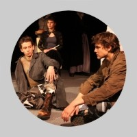
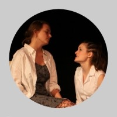
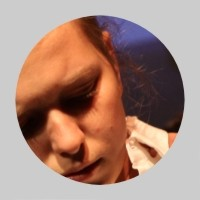
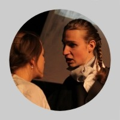

dramatický duel, 60 minut bez pøestávky, hraje NAÈERNO
Mohla to být lovestory, ale je to tragédie. To už nezmìníte ani vy. Ale rozhodnete o tom, kdo mìl pravdu!
Text: Jean Anouilh
Pøeklad: Jaroslav Koneèný
Scéna, kostýmy a plakát: Jakub Baran
Pedagogická spolupráce: Jakub Baran a Lucie Valenová
Herecká spolupráce: Denisa Nová
Režie: Ludìk Horký
Svìtla, zvuk, kamera: Jan Øehoøka, Jakub Hudec
Foto z inscenace: Robert Coufal

Osoby a obsazení
Prolog a chór: Markéta Hausnerová
Chùva: Barbora Kašpaøíková/Andrea Šíchová
Antigona: Ludmila Øímanová/Kateøina Tvrdíková
Isména: Anna Kottasová/Lucie Špitálská
Haimón: Oliver Cox/Jakub Heømánek
Kreón: Vojtìch Koutek/Matìj Trojan
Strážný: Vojtìch Chalupa/Vojtìch Klinger
2. strážný: Pavel Trnka
3. strážný: Jan Øehoøka
Posel: Jakub Hudec
Euridika: Kateøina Chadimová
Premiéry: 28. bøezna a 4. dubna 2009 v rámci jubilejní 20. sezóny Dìtského dramatického souboru Ty-já-tr
„Dìti musejí snášet hlouposti dospìlých, dokud nejsou dost veliké, aby je opakovaly.“
— Jean Anouilh
„Pamatuj, že i ta nejtìžší hodina ve tvém životì má jen 60 minut.“
— Sofoklés
Jean Anouilh napsal za padesát let aktivní literární tvorby více než tøicet divadelních her, což z nìj èiní jednoho z nejplodnìjších autorù francouzské dramatiky dvacátého století. Pøestože nemùže být jednoznaènì zaøazen k žádné vyhranìné škole èi smìru, èásteènì pøejímal Sartrùv existenciální pohled a byl ovlivnìn divadelní tvorbou Giraudouxe, Pirandella, Claudela. Sám se hlásil k odkazu Moliéra.
Narodil se 23. èervna 1910 v Bordeaux. Jeho otec byl krejèí, matka houslistka, èlenka orchestru, který hrál v kasinu nedaleko mìsta. Právì komedie a operety, které zdejší podnik uvádìl, byly Anouilhovým prvním setkáním s divadlem. Ve dvanácti letech psal už první hry (ty se však ještì nedoèkaly profesionálního uvedení). V dobì volby budoucího povolání se ale mladý Jean rozhodl pro studium práv. Studoval krátce na Sorbonnì, poté pracoval jako textaø v reklamní agentuøe a také psal drobné vaudevilly pro film.
Zásadním byl pro Anouilhùv další vývoj rok 1931, kdy se stal tajemníkem Louise Jouveta – významného divadelníka a øeditele Comédie des Champs Elysées. Zde se setkal s Jeanem Giraudouxem, jehož hry mladého dramatika okouzlily a staly se velkou inspirací pro jeho právì se rodící literární styl. O rok pozdìji se Anouilh oženil s hereèkou Monelle Valentin, pozdìjší pøedstavitelkou mnoha ženských postav jeho her.
V pìtadvaceti se rozhodl zasvìtit svùj život cele psaní. Bìhem následujících let dokonèil hned nìkolik her a sklidil první pomìrnì znaèný úspìch s textem Byl jednou jeden vìzeò. Zlomovým okamžikem v jeho kariéøe se roku 1937 stalo uvedení Cestujícího bez zavazadel v režii Georgese Pitoëfa. Od této doby se mohlo paøížské publikum témìø každou sezónu tìšit na novou Anouilhovu hru.
Za 2. svìtové války se stala hitem jeho hra Leokádie (1940). Roku 1942 Anouilh v Eurydice poprvé èerpal z antických námìtù. O dva roky pozdìji získal široké obecenstvo Antigonou – úpravou Sofoklovy antické tragédie. Tìžištì konfliktu pøenesl do støetu Kreontova realisticko-pragmatického øádu s Antigoninou potøebou individualistického svobodného jednání. Akcentoval rozpor mezi morálním relativismem Kreónta a morálním maximalismem titulní hrdinky. V hlavní roli zazáøila autorova žena Monelle Valentin. Brzy se stala Antigona jednoznaènì nejdiskutovanìjší Anouilhovou hrou. Protože se dramatik ve svém díle otevøenì nepøiklání k žádné ze stran konfliktu, byla hra vnímána nejen jako oslava odbojného èinu, ale rovnìž jako omluva kolaborace. Psal se rok 1944!
Roku 1946 má v Théâtre de l‘Atelier premiéru Romeo a Jana. Inscenace se doèkala sto ètyøiceti repríz.
Po válce se Anouilh stal nejúspìšnìjším evropským dramatikem. Ve Spojených státech získal slávu díky svým „kostýmovaným hrám“, které zaèal psát kolem roku 1950. Sem patøí Skøivánek (1952), který je autorovým zpracováním osudu Jany z Arku. Jiná kostýmovaná hra Becket (1959) je známá díky filmovému zpracování s Peterem O‘Toolem v hlavní roli.
S nástupem nových dramatikù, jako byli Ionesco èi Beckett, zaèalo jeho dílo ztrácet svou kritickou sílu, a tak se Anouilh nakrátko odmlèel. V 60. a 70. letech se vìnoval také režii vlastních i cizích her (1960 - Tartuffe, 1963 - Richard III., 1970 - A neprobuïte madam ad.). Poslední hru Pupek napsal roku 1980. Natrvalo pøesídlil do švýcarského Lausanne. V té dobì byl již rozvedený s Monelle Valentin a žil se svou druhou ženou, hereèkou Nicole Lancon. Zemøel 3. øíjna 1987.
Anouilh rovnìž pøekládal a upravoval øadu dìl jiných autorù (napø. Shakespeare, Wilde, Greene). Od roku 1936 se podílel na nìkolika filmových scénáøích, sám dva filmy režíroval, psal libreta pro balet. Jeho filmového scénáøe Malá Moliérová se ujal režisér J. L. Barrault – hlavní roli si ve filmu zahrála Anouilhova dcera Catherine.